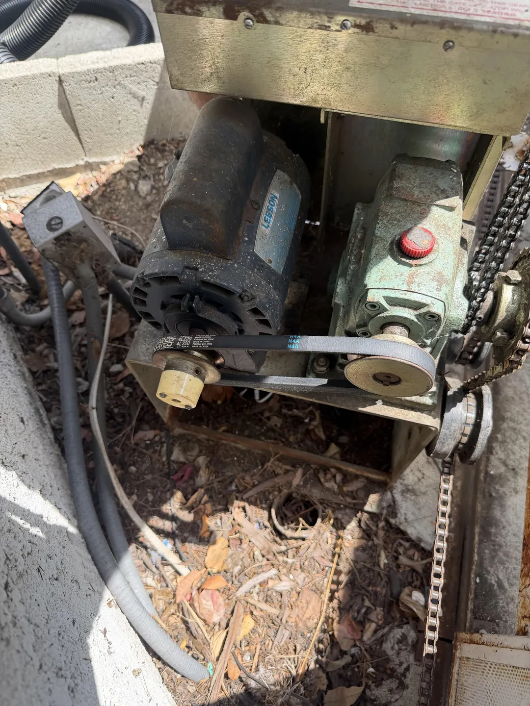
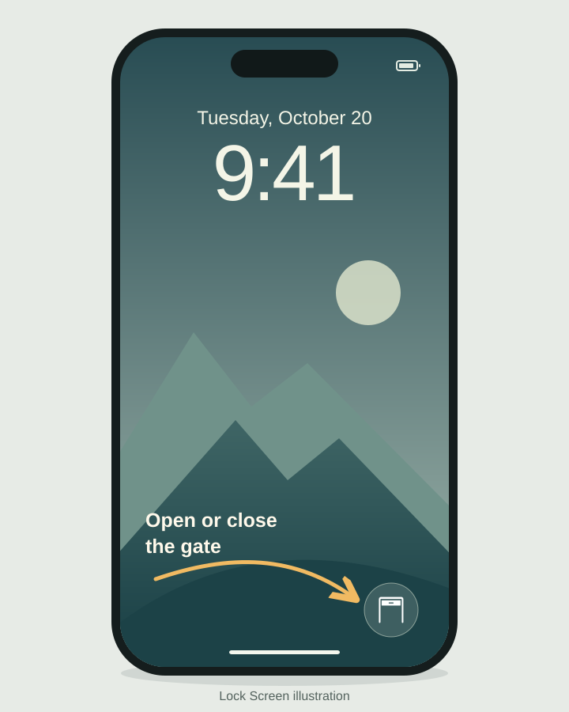
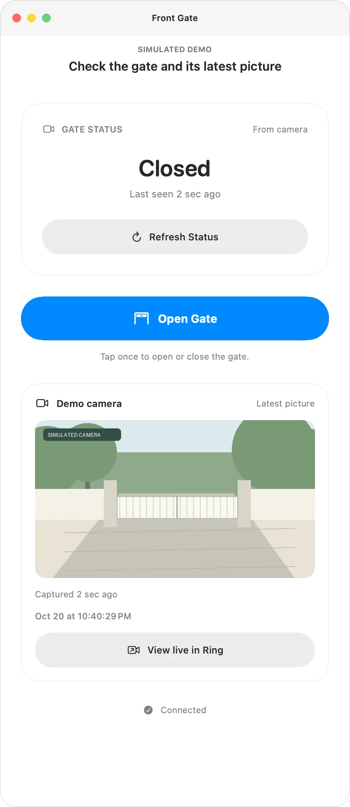
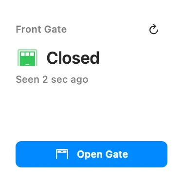
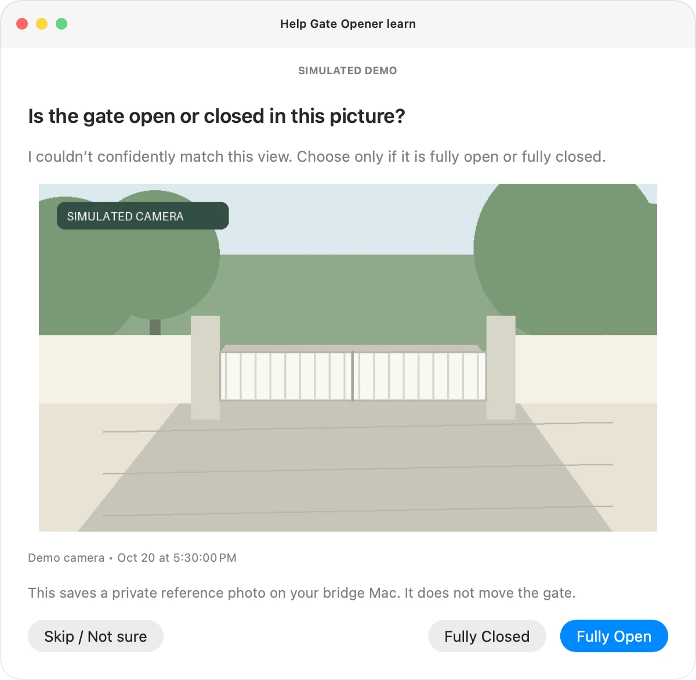
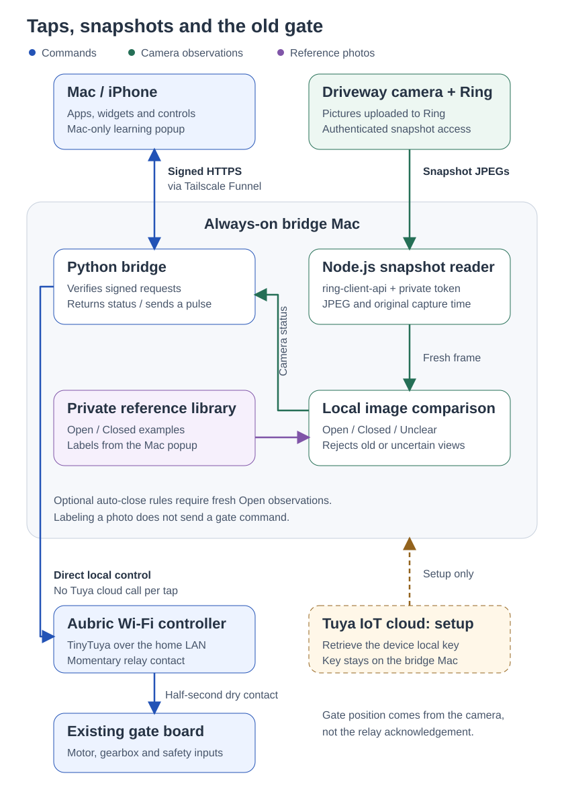

This started with wanting a button for my gate on my Mac and iPhone. It grew into a small app that shows the latest camera picture, checks whether the gate looks open or closed, and closes it when I forget. The latest addition uses DoorDash texts and an order-address check to give a driver access when a delivery is coming home.
Smart Life already controlled the gate, but I found the app buggy. I built this around the hardware I already have. I'm sharing the source and these notes as a record of how the pieces fit together.




Source on GitHub · Technical setup
Starting with the hardware
I started with a broken, 30-year-old gate and an Elite SL-3000 / SL-3000UL sliding-gate operator. I kept that hardware and added an Aubric Smart WiFi Garage Door Opener Remote Controller, a Tuya / Smart Life accessory sold for garage doors. This is the Amazon listing from my order (ASIN B07QG7RGFW). That's a plain product link, not an affiliate link.
Before any software, I got the gate moving again by replacing the drive belt. A $10 belt was enough to keep the old motor and gearbox going; the Wi-Fi controller was a separate addition.
I connected the Aubric controller's two control wires directly to the gate's control-board terminals. The approach is a normally-open dry-contact trigger: a brief relay closure acts like pressing a button. The existing gate controller still handles the motor and movement; the current software sends a half-second pulse rather than holding the input on.


The archived photos show the existing board, but don't verify which terminal pair I used for the add-on. I'm leaving terminal numbers and supply voltage out rather than turning these old photos into a wiring recipe. The gate's manual and existing safety inputs still matter.
Getting from Smart Life to my own button
I paired the Aubric controller with Smart Life, then used Tuya’s cloud API through TinyTuya to retrieve its local key. That setup needs a Tuya IoT project linked to the Smart Life account. The project’s setup helper retrieves the key without saving the cloud Client ID or Client Secret.
The cloud API was for setup. Normal gate commands use TinyTuya to talk directly to the controller over the home network. The bridge switches data point 1 on, waits half a second, then switches it off again. The controller’s local key stays on the bridge Mac; the apps have a separate secret for their signed bridge requests.
Giving it a button on my devices
An always-on Mac runs a small Python bridge. The Mac and iPhone apps send it signed requests over HTTPS, and the bridge talks to the Wi-Fi controller over the home network. The controller's local key stays on that Mac.
The Mac desktop widget gives me a button without opening the app. The iPhone has a Home Screen widget and a Control Center control. When I do open the Mac app, I can check the camera and send a command from there. Closing its last window removes the Dock icon; the widget and bridge keep running.
A successful command wasn't enough
The relay can accept a command without telling me what the gate actually did. That distinction became the next part of the project: showing the gate's position separately from the last button press.
I started with a Ring doorbell, then switched to a continuously powered driveway camera for more frequent snapshots. One lesson along the way was that a wired doorbell can still be battery-based; a power wire doesn't necessarily make it suitable for frequent image requests.
I started with the community Ring MCP server, signed in to my Ring account with two-factor authentication, and used it to find the camera and try snapshots. It uses the unofficial ring-client-api library.
For continuous checks, a small Node.js helper on the always-on Mac uses that library’s authenticated client and Ring’s snapshot endpoint to download JPEGs. It keeps the rotating refresh token in private storage and passes each image with its capture time to the Python monitor. The apps read the shared result and latest picture from the bridge, so every widget refresh doesn’t become another Ring request.
The comparison happens locally on the Mac. It crops the part of the picture containing the gate and compares brightness-normalized structure and edges against examples I labeled Open and Closed. Color and infrared images have separate reference sets. Ring still supplies the pictures; there's no cloud vision model deciding the position.
If the picture is old, unfamiliar or too close to both examples, the result is Unclear. The app shows the picture's capture time and links to Ring Live View so I can look for myself. The monitor checks about every ten seconds, though Ring can delay images and iOS can delay widget refreshes.


Teaching it when the light changes
My next problem was light. A gate that looked obvious to me could still come back as Unclear when shadows moved or evening lights came on. I could keep adding reference photos by hand, but I wanted the app to ask when it needed help.
Now, when a fresh picture is unclear, the Mac shows that exact picture and asks me to choose Fully Open, Fully Closed, or Skip / Not sure. My answer saves a private reference on the bridge Mac for future comparisons, helping both widgets. A partly open or moving gate is a reason to skip.
Questions are spaced at least 15 minutes apart. Learning keeps running with the main window closed and the Dock icon hidden; quitting the app stops it. Labeling a picture never sends a gate command. It is still the same local comparison, with more examples from different light.

How the pieces fit together
Two paths meet on the Mac: one sends a momentary relay command, the other checks a camera picture. A saved Open or Closed label improves later comparisons; it does not operate the gate.


Letting it close the gate
Once I had a separate camera observation, I added an overnight rule for a gate left open too long, and a distance rule using device observations from TagTracker on the home Mac.
Both need fresh evidence that the gate is open before attempting a close. The distance rule gets one attempt per trip and only resets after a confirmed return home. Attempts are saved before sending, so restarting the service or losing a response doesn't turn into repeated button presses. These rules are optional and disabled in an unconfigured installation.
The camera is still an estimate, and a pulse can open, close or stop the gate depending on its controller. The physical gate's obstruction sensors remain responsible for safe movement. The implementation details and limits are in the automatic-closing notes and security policy.
Asking AI for a second opinion
The closing rules exposed a weakness in my own check. Each one wanted a 95% match before trusting a picture, and night pictures never got there: they scored between 78% and 94%, so the gate stayed open when it should have closed. I replaced the fixed bar with a relative one. A picture now has to look much closer to the open examples than the closed ones, or the reverse, and anything in between is still Unclear.
I also wanted to know whether a vision model could double-check it. I gave a few cheap models 25 labeled gate pictures, twice each, along with an open and a closed example. GPT-6 Luna swapped open and closed on 10 to 13 of the 50 answers while claiming 98–99% confidence. Claude Haiku 5.5 almost always said it couldn't tell. Gemini 3.8 Flash swapped 9. Cropping the picture down to the gate made every model worse. Gemini 4 Argon, given the whole frame, got all 50 right.
So Argon now runs as a silent second opinion, only when the local check is unsure. Its answer is logged and never sends a gate command. The home Mac also keeps a private 14-day archive of camera pictures to check those answers against. If Argon keeps a clean record, I plan to let it label pictures for learning mode instead of asking me. These changes run on my home Mac first and aren't in the public source yet.
Giving a delivery driver access
I also added DoorDash delivery access. The first order-confirmation text starts an address check against the signed-in DoorDash website in Safari on the home Mac. Ordering food does not always mean I am ordering it home, so the text alone is not enough.
When the approaching-driver text arrives, the watcher checks the address again and matches it to the order. It requests one opening only when the order is verified for home and a fresh camera observation confirms the gate is closed. Missing, ambiguous or unreadable order details cause it to skip automatic access.
The delivery gets a 15-minute window. At the end, closing still requires fresh camera evidence that the gate is open. Duplicate texts and uncertain command responses do not cause repeated button presses. If the gate closes early, that delivery window ends.
This is enabled on my home server. Safari must stay signed in with a window open. The parser, duplicate handling and simulated opening-to-closing flow have automated tests, but the first real delivery through the complete flow is still pending.
If you want to look around
The source includes the bridge, native SwiftUI apps and widgets, camera comparison, and simulated-controller tests. It's specific to this setup; another installation needs its own controller checks, wiring and calibration.
The signed Mac download is version 1.0.0. The camera pictures, learning mode and automatic-closing features shown here are in the newer source build. The iPhone app is built from source.
- Build and setup notes
- Camera comparison and calibration
- Automatic-closing rules
- Regenerate the screenshots and demo
- Changelog
MIT licensed. Not affiliated with Aubric, Tuya, Smart Life, Ring or Amazon.